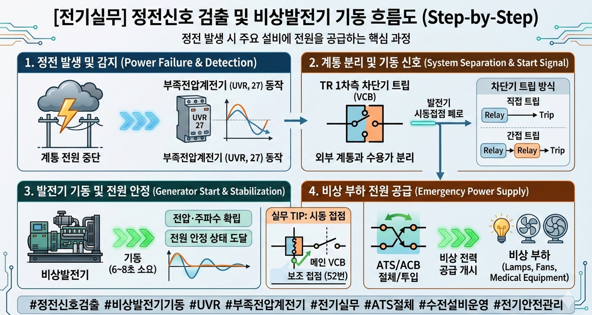

[전기실무] 정전 발생 시 비상발전기는 어떻게 돌아갈까? 정전신호 검출 및 기동 원리 총정리
전력계통에 예기치 못한 정전이 발생했을 때, 비상 발전기가 즉시 가동되어 주요 설비에 전원을 공급하는 과정은 건축물 안전 관리의 핵심입니다. 오늘은 정전 신호 검출 방법부터 비상발전기 기동 흐름까지 실무 중심의 내용을 정리해 드립니다.

1. 수용가 정전의 주요 원인
정전은 크게 외부 요인과 내부 요인으로 나뉩니다.
- 외부 요인: 자연재해, 선로 고장으로 인한 불시 정전, 계획 정전, 예비 전력 부족, 배전선로 리클로저(R/C) 동작 등.
- 내부 요인: 자가용 전기설비의 지락·단락 사고, 화재 시 소방대 진압을 위한 임의 차단 등.
2. 정전신호 검출 및 발전기 기동 흐름도 (Step-by-Step)
정전이 발생하면 시스템은 다음과 같은 순서로 정전 신호를 감지하고 대응합니다.
- Step 1. 전력계통 정전 발생: 외부 또는 내부 요인으로 전원 공급 중단.
- Step 2. 부족전압계전기(UVR, 27) 동작: 전압이 정격 이하로 떨어지면 UVR이 이를 감지.
- Step 3. 보조 릴레이 동작 및 차단기 트립: TR(변압기) 1차측 차단기가 트립되어 계통을 분리.
- Step 4. 발전기 시동접점 폐로: 차단기 트립과 동시에 발전기에 기동 신호 전달.
- Step 5. 비상발전기 기동 및 전원 안정: 발전기가 돌아가기 시작하며 약 6~8초 후 전원이 안정됨.
- Step 6. 전원 절체(ATS/ACB): ATS가 발전측으로 절체되거나 ACB가 투입되어 비상 부하에 전력 공급.
3. 핵심 장비: 부족전압계전기(UVR)와 차단기 트립 방식
UVR(Under Voltage Relay, 27)의 역할
- 사용 목적: 부족 전압으로 인한 설비의 오동작 및 전동기 부하 소손 방지.
- 동작 특성: 보통 정격 전압의 70% 수준에서 동작하도록 설정하며, 한시 레버(Lever)를 통해 동작 시간을 조정함.
차단기 트립 방식
- 직접 트립 방식: 보호계전기가 고장을 감지하면 즉시 차단기를 트립시킴.
- 간접 트립 방식: 보호계전기가 보조 릴레이를 거쳐 차단기를 트립시키는 방식으로, 최근 실무에서 주로 사용됨.
4. 실무 TIP: 비상발전기 시동 접점
국내에서 가장 많이 사용하는 방식은 메인 VCB(진공차단기)의 보조 접점(52번 접점)을 활용하는 방식입니다. 디지털 보호계전기(예: GIPAM 2000 FI)를 사용하는 경우, 제품마다 출력 단자(DO) 구성이 다르므로 반드시 해당 제품의 카탈로그를 확인하여 시퀀스를 구성해야 합니다.
#정전신호검출
#비상발전기기동
#UVR
#부족전압계전기
#차단기트립
#전기실무
#수전설비운영
#ATS절체
#전기안전관리
#VCB접점